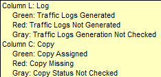

Using the Export Center Screen
Click the “Export Center” button from the Affiliate Jobs screen to bring up the main Export Center screen. On this screen, you can view previously defined exports, add exports to the export queue to begin processing them, create new export specifications, and view a history of past exports.
Using the Export Center Screen
The Export Manager checks whether exports are being generated every 60 seconds.
Click on the Key icon in the bottom left corner for a description of what the different fields and colors represent.

Export Center Header
The top section of the screen lists all the previously defined exports.
- Gen (generate) indicates which export(s) are ready to be exported
- Export Type describes what type of export will be generated
- Name is a title you give to describe the export that can be 50 characters long. Typically it describes what comprises the export or who is responsible for its generation
- Vehicle List indicates the number of vehicles that make up the export
- L, or Log Status for each export is determined when the Export Center screen is activated/entered. Each status is color coded as follows:
- Green- Logs are Generated for export dates
- Red- Logs are not Generated for export dates
- Gray- Log status is undetermined
- The export will be split if some of the vehicles are OK (Green) and other vehicles are not OK (Red)
- C or Copy Status is determined when the Check Copy button is clicked. The copy status is color coded as follows:
- Green- All spots for export dates have copy
- Red- Not all spots for export dates have copy
- Gray- Copy status is undetermined
- The export will be split if some of the vehicles are OK (Green) and other vehicles are not OK (Red)
- Working Date is the next date you need to generate the export. It is automatically calculated by subtracting the Lead Time from the Export Start Date, and cannot be altered by the user
- For example, if the last export date is Sunday 7/20, the next Export Start Date would be Monday 7/21, so if the export should be generated on Thursday, the lead time would need to be 4, because they are going to be generating it 4 days in advance (Sunday, Saturday, Friday, Thursday: 4 days)
- Last Date Exported is the end date of the last export. Once set, this field will update automatically
- Lead Time is the number of days prior to the start date of the log that the export needs to be generated
- Cycle is number of days that should be generated at one time; usually 1 or 7
- Export Start Date and Export End Date are the dates of the next export that needs to be done
- The Lead Time and Cycle, when subtracted from the Export Start Date, will determine the Working Date
- Pressing the X with the red background color undoes any export split or partial export that was created (see the Generating Partial Exports section below).
Export Center Schedule Queue
The bottom half of the screen lists all exports that you or anyone else has scheduled to run. The export with Priority 1 is currently running. The others priorities will run in priority number order.
- The User initials are those of the user that generated the export request, and are defined in the User Profile screen
- The Priority field lists the order in which the exports will be generated
- The Status field indicates the stage of the export, such as Processing or Completed. When the export running completes, it is moved to the bottom of the list with a status of Completed
- The Requested field lists the time and date at which the export was scheduled to be generated
- The Start field lists the date and time at which the processing of the export began, and the Completed field lists the date and time at which it was completed